I'm a project scientist at Carnegie Mellon University, working with Prof. Srinivasa Narasimhan and Prof. Aswin Sankaranarayanan. My research explores heat as a carrier of visual information. I develop novel vision and imaging systems that leverage the ubiquitous interplay of light and heat all around us.
Previously, I obtained my Ph.D. and M.S. in Robotics from the University of Michigan, where I was advised by Prof. Matthew Johnson-Roberson and Prof. Ram Vasudevan. My doctoral research explored the physics of image formation in thermal cameras and the use of novel sensors for autonomous vehicles.
Prior to my Ph.D., I earned my B.Tech and M.Tech in Electrical Engineering from the Indian Institute of Technology, Madras. During my undergraduate studies, I spent a summer at Polytechnique Montréal, Canada, working with Prof. Jerome Le Ny on motion planning algorithms for autonomous mapping of ground structures, through the Mitacs Globalink Research Internship.
Publications
2025

Mani Ramanagopal, Bailey Miller
SIGGRAPH Asia 2025 Course

Sriram Narayanan, Mani Ramanagopal, Srinivasa G. Narasimhan
arXiv preprint, 2025

Zeqing Leo Yuan, Mani Ramanagopal, Aswin C. Sankaranarayanan, Srinivasa G. Narasimhan
arXiv preprint, 2025
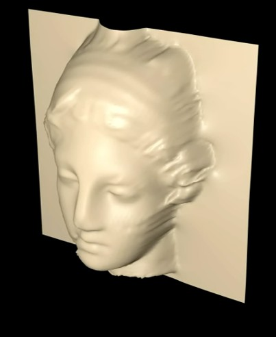
Akihiko Oharazawa, Sriram Narayanan, Mani Ramanagopal, Srinivasa G. Narasimhan
IEEE International Conference on Computational Photography (ICCP), 2025
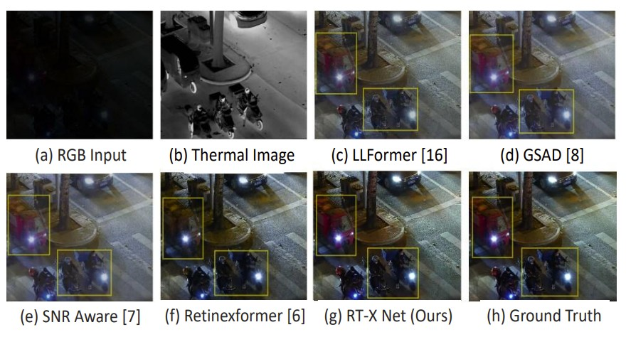
Raman Jha, Aditya Lenka, Mani Ramanagopal, Aswin C. Sankaranarayanan, Kaushik Mitra
IEEE Conference on Image Processing (ICIP), 2025
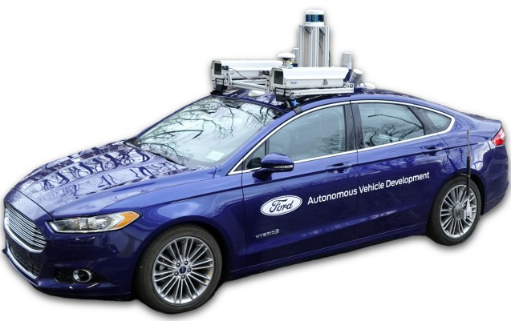
Spencer Carmichael, Austin Buchan, Mani Ramanagopal, Radhika Ravi, Ram Vasudevan, Katherine A. Skinner
The International Journal of Robotics Research (IJRR), 2025

Spencer Carmichael, Manohar Bhat, Mani Ramanagopal, Austin Buchan, Ram Vasudevan, Katherine A Skinner
2025 IEEE/CVF Winter Conference on Applications of Computer Vision (WACV)
2024
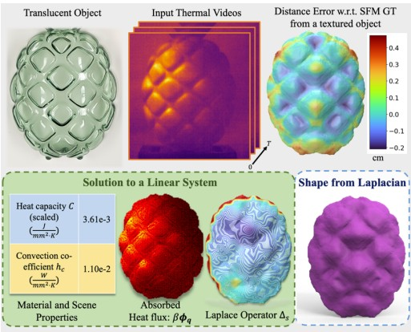
Sriram Narayanan, Mani Ramanagopal, Mark Sheinin, Aswin C Sankaranarayanan, Srinivasa G Narasimhan
European Conference on Computer Vision (ECCV), 2025
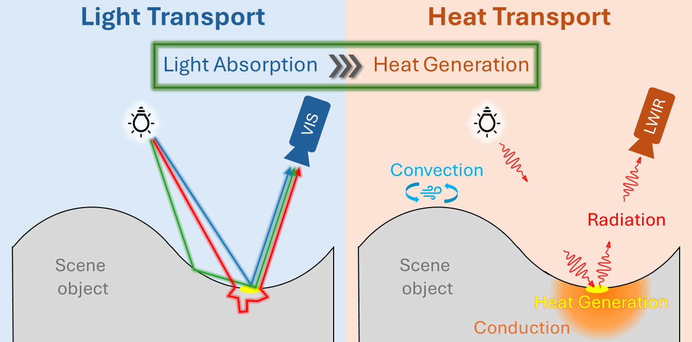
Mani Ramanagopal, Sriram Narayanan, Aswin C Sankaranarayanan, Srinivasa G Narasimhan
IEEE Conference on Computer Vision and Pattern Recognition (CVPR), 2024
2023
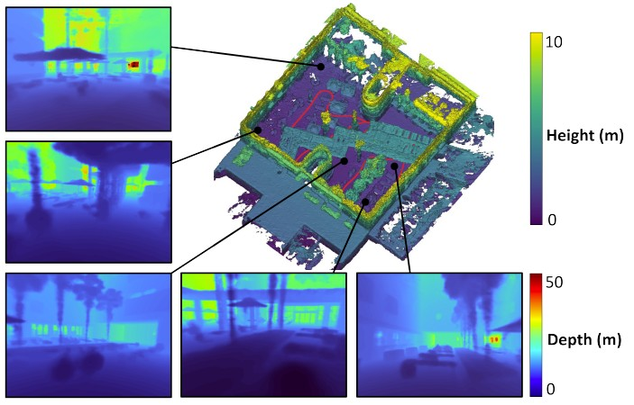
Seth Isaacson, Pou-Chun Kung, Mani Ramanagopal, Ram Vasudevan, Katherine A Skinner
IEEE Robotics and Automation Letters (RA-L), 2023
IEEE RAL Best Paper Award
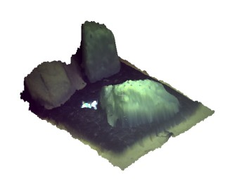
Advaith Venkatramanan Sethuraman, Mani Ramanagopal, Katherine A Skinner
OCEANS 2023-MTS/IEEE US Gulf Coast, 2023
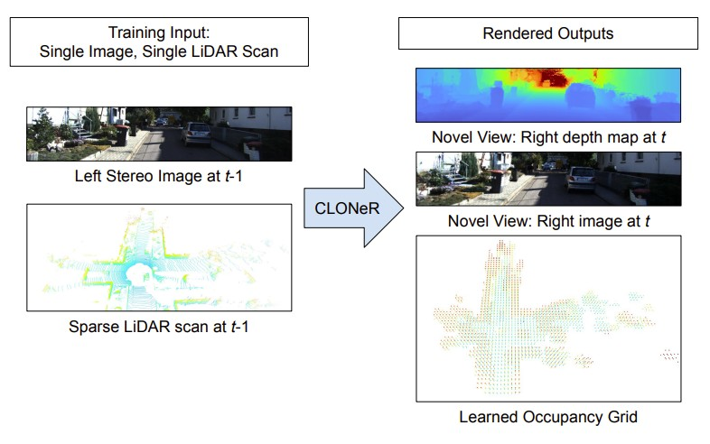
Alexandra Carlson†, Mani Ramanagopal†, Nathan Tseng, Matthew Johnson-Roberson, Ram Vasudevan, Katherine A Skinner
IEEE Robotics and Automation Letters, 2023
2020
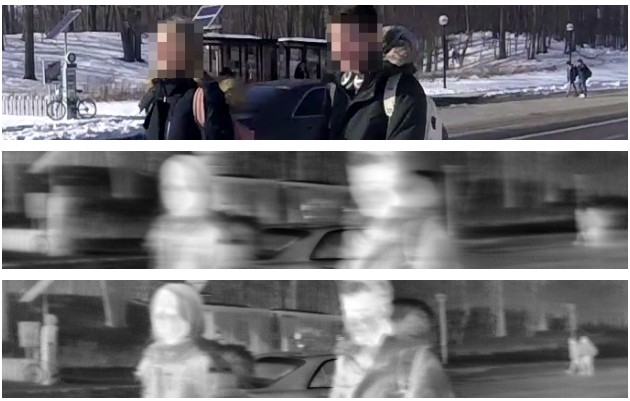
Mani Ramanagopal, Zixu Zhang, Ram Vasudevan, Matthew Johnson-Roberson
Robotics: Science and Systems (RSS), 2020

Junming Zhang, Mani Ramanagopal, Ram Vasudevan, Matthew Johnson-Roberson
IEEE International Conference on Robotics and Automation (ICRA), 2020
2019
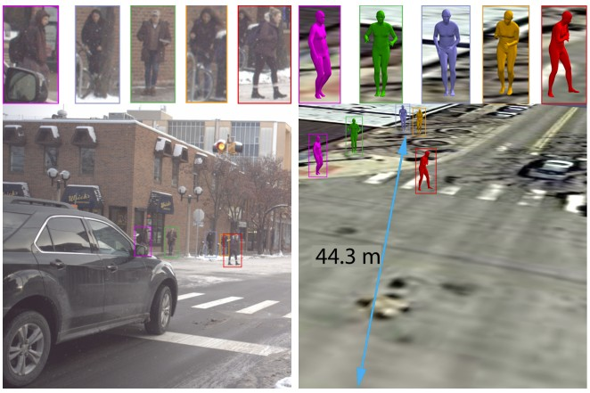
Wonhui Kim, Mani Ramanagopal, Charles Barto, Ming-Yuan Yu, Karl Rosaen, Nick Goumas, Ram Vasudevan, Matthew Johnson-Roberson
IEEE Robotics and Automation Letters (RA-L), 2019
2018
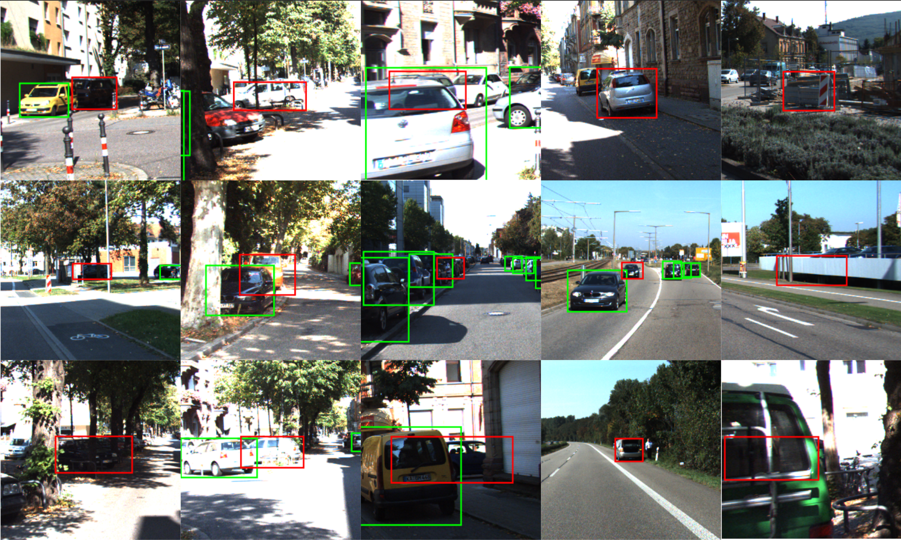
Mani Ramanagopal, Cyrus Anderson, Ram Vasudevan, Matthew Johnson-Roberson
IEEE Robotics and Automation Letters (RA-L), 2018
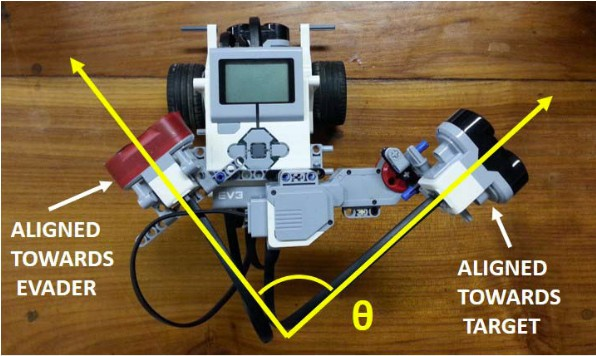
Jitesh Mohanan, Mani Ramanagopal, Raghav H Venkatesan, Bharath Bhikkaji
IEEE Transactions on Control Systems Technology, 2018
2017

Mani Ramanagopal, Andre Phu-Van Nguyen, Jerome Le Ny
IEEE Transactions on Automation Science and Engineering, 2017